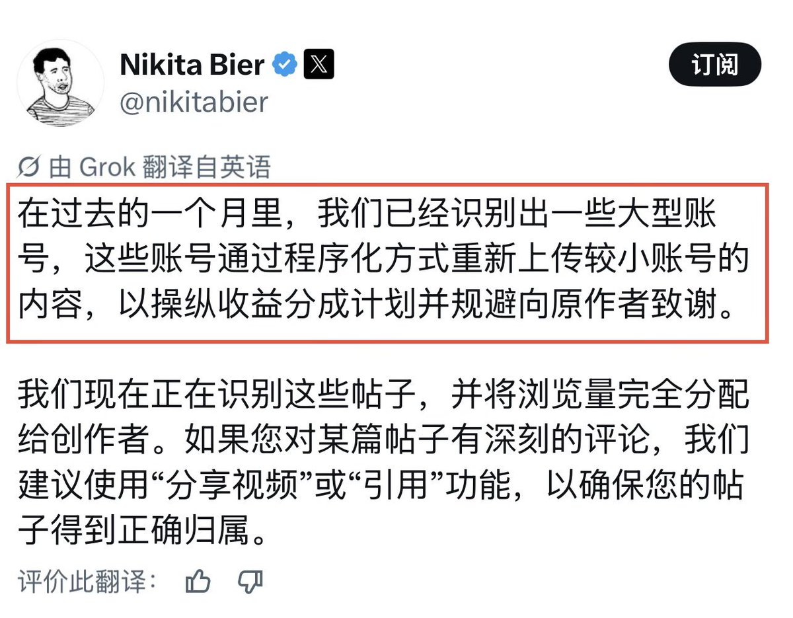
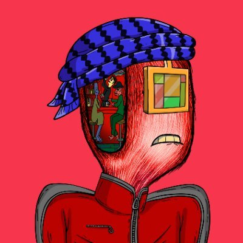

番茄🍅
@bcfqdtfqz
我的帖子信息来源很复杂，从国抖到小红书到qq群应有尽有，不可能每一条都去推上找有没有相似的。。
唉，要是侵权或者影响本体的话私信我我会删除的，除了我想哈的

番茄🍅
@bcfqdtfqz
我的帖子信息来源很复杂，从国抖到小红书到qq群应有尽有，不可能每一条都去推上找有没有相似的。。
唉 https://t.co/p7Mbq70X0S

Benjieming的撸毛之旅
@Benjieming1Q84
【X(前推特)开始打击抄袭和搬运了】
1️⃣很多“粉丝多的大账号”，看到某个小账号的内容好，就直接“搬过来”或“AI二次加工”，并利用自己的“大账号”优势，获得高浏览量。
2️⃣目前这个方法不好用了，所以上个月，很多“浏览量非常大”，但“收益却很低”。
->看好别人的内容，应该直接引用并加上自己的点评。 https://t.co/XxdWFCAUdV